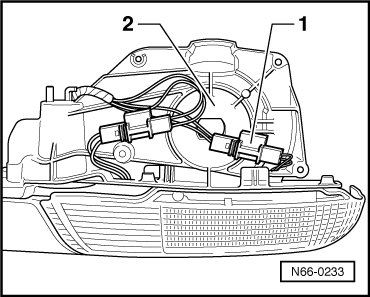
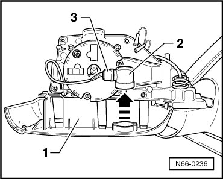

Entry Light
Exterior Mirror, through 10.2006
Entry Light
Removing
- Mirror Glass, Removing, refer to --> Mirror Glass
- Remove mirror housing, refer to --> Mirror Housing
- Disengage and disconnect the connector - 1 - on the rear side of the mirror base plate - 2 -.

- Carefully press entry light - 2 - by hand out of locking tabs in assembly component - 1 -.

- To change the bulb, disconnect the connector - 3 - from the entry lamp - 2 -.
Installing
To install, perform the steps used for removal in reverse order.